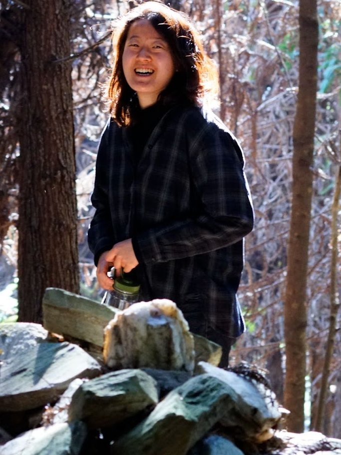

I'm Miranda, a conservationist working in China's national parks and protected areas.
Learn about my current work on eco-tourism and concessionaires (特许经营) in China's national parks here. The site includes descriptions and bilingual maps of China's five current national parks.
Read my conservation and personal stories here.
Wonder what the Three-River-Source (Sanjiangyuan) region is like? Watch a vlog I made here.